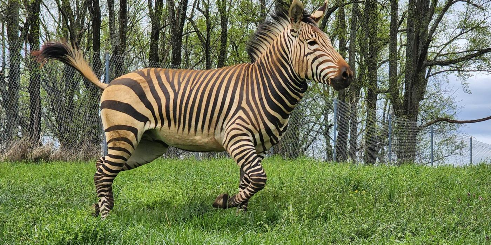

Bears

Bears are carnivoran mammals of the family Ursidae (/ˈɜːrsɪdiː, -daɪ/). They are classified as caniforms, or doglike carnivorans. Although only eight species of bears are extant, they are widespread, appearing in a wide variety of habitats throughout most of the Northern Hemisphere and partially in the Southern Hemisphere. Bears are found on the continents of North America, South America, and Eurasia. Common characteristics of modern bears include large bodies with stocky legs, long snouts, small rounded ears, shaggy hair, plantigrade paws with five nonretractile claws, and short tails. While the polar bear is mostly carnivorous, and the giant panda is mostly herbivorous, the remaining six species are omnivorous with varying diets. With the exception of courting individuals and mothers with their young, bears are typically solitary animals. They may be diurnal or nocturnal and have an excellent sense of smell. Despite their heavy build and awkward gait, they are adept runners, climbers, and swimmers. Bears use shelters, such as caves and logs, as their dens; most species occupy their dens during the winter for a long period of hibernation, up to 100 days. Bears have been hunted since prehistoric times for their meat and fur; they have also been used for bear-baiting and other forms of entertainment, such as being made to dance. With their powerful physical presence, they play a prominent role in the arts, mythology, and other cultural aspects of various human societies. In modern times, bears have come under pressure through encroachment on their habitats and illegal trade in bear parts, including the Asian bile bear market. The IUCN lists six bear species as vulnerable or endangered, and even least concern species, such as the brown bear, are at risk of extirpation in certain countries. The poaching and international trade of these most threatened populations are prohibited, but still ongoing.
A camel (from Latin: camelus and ‹See Tfd›Greek: κάμηλος (kamēlos) from Ancient Semitic: gāmāl) is an
even-toed ungulate in the genus Camelus that bears distinctive fatty deposits known as "humps" on its back.
Camels have long been domesticated and, as livestock, they provide food (camel milk and meat) and textiles
(fiber and felt from camel hair). Camels are working animals especially suited to their desert habitat and
are a vital means of transport for passengers and cargo. There are three surviving species of camel. The
one-humped dromedary makes up 94% of the world's camel population, and the two-humped Bactrian camel makes
up 6%. The wild Bactrian camel is a distinct species that is not ancestral to the domestic Bactrian camel,
and is now critically endangered, with fewer than 1,000 individuals.
The word camel is also used informally in a wider sense, where the more correct term is "camelid", to
include all seven species of the family Camelidae: the true camels (the above three species), along with the
"New World" camelids: the llama, the alpaca, the guanaco, and the vicuña, which belong to the separate tribe
Lamini. Camelids originated in North America during the Eocene, with the ancestor of modern camels,
Paracamelus, migrating across the Bering land bridge into Asia during the late Miocene, around 6 million
years ago.
Ecological and behavioral adaptations
Camels do not directly store water in their humps; they are reservoirs of fatty tissue. When this tissue is
metabolized, it yields a greater mass of water than that of the fat processed. This fat metabolization,
while releasing energy, causes water to evaporate from the lungs during respiration (as oxygen is required
for the metabolic process): overall, there is a net decrease in water.
A portrait of a camel with a visibly thick mane
A camel's thick coat is one of its many adaptations that aid it in desert-like conditions.
A leashed pack camel
A camel in Somalia, which has the world's largest camel population
Camels have a series of physiological adaptations that allow them to withstand long periods of time without
any external source of water. The dromedary camel can drink as seldom as once every 10 days even under
very hot conditions, and can lose up to 30% of its body mass due to dehydration. Unlike other mammals,
camels' red blood cells are oval rather than circular in shape. This facilitates the flow of red blood cells
during dehydration and makes them better at withstanding high osmotic variation without rupturing when
drinking large amounts of water.
Camels are able to withstand changes in body temperature and water consumption that would kill most other
mammals. Their temperature ranges from 34 °C (93 °F) at dawn and steadily increases to 40 °C (104 °F) by
sunset, before they cool off at night again. In general, to compare between camels and the other
livestock, camels lose only 1.3 liters of fluid intake every day while the other livestock lose 20 to 40
liters per day. Maintaining the brain temperature within certain limits is critical for animals; to
assist this, camels have a rete mirabile, a complex of arteries and veins lying very close to each other
which utilizes countercurrent blood flow to cool blood flowing to the brain. Camels rarely sweat, even
when ambient temperatures reach 49 °C (120 °F). Any sweat that does occur evaporates at the skin level
rather than at the surface of their coat; the heat of vaporization therefore comes from body heat rather
than ambient heat. Camels can withstand losing 25% of their body weight in water, whereas most other mammals
can withstand only about 12–14% dehydration before cardiac failure results from circulatory disturbance.
When the camel exhales, water vapor becomes trapped in their nostrils and is reabsorbed into the body as a
means to conserve water. Camels eating green herbage can ingest sufficient moisture in milder conditions
to maintain their bodies' hydrated state without the need for drinking.
Domesticated camel calves lying in sternal recumbency, which aids heat loss
The camel's thick coat insulates it from the intense heat radiated from desert sand; a shorn camel must
sweat 50% more to avoid overheating. During the summer the coat becomes lighter in color, reflecting
light as well as helping avoid sunburn. The camel's long legs help by keeping its body farther from the
ground, which can heat up to 70 °C (158 °F). Dromedaries have a pad of thick tissue over the sternum
called the pedestal. When the animal lies down in a sternal recumbent position, the pedestal raises the body
from the hot surface and allows cooling air to pass under the body.
Camels
Elephants
Elephants are the largest living land animals. Three living species are currently recognised: the African bush elephant (Loxodonta africana), the African forest elephant (L. cyclotis), and the Asian elephant (Elephas maximus). They are the only surviving members of the family Elephantidae and the order Proboscidea; extinct relatives include mammoths and mastodons. Distinctive features of elephants include a long proboscis called a trunk, tusks, large ear flaps, pillar-like legs, and tough but sensitive grey skin. The trunk is prehensile, bringing food and water to the mouth and grasping objects. Tusks, which are derived from the incisor teeth, serve both as weapons and as tools for moving objects and digging. The large ear flaps assist in maintaining a constant body temperature as well as in communication. African elephants have larger ears and concave backs, whereas Asian elephants have smaller ears and convex or level backs. Elephants are scattered throughout sub-Saharan Africa, South Asia, and Southeast Asia and are found in different habitats, including savannahs, forests, deserts, and marshes. They are herbivorous, and they stay near water when it is accessible. They are considered to be keystone species, due to their impact on their environments. Elephants have a fission–fusion society, in which multiple family groups come together to socialise. Females (cows) tend to live in family groups, which can consist of one female with her calves or several related females with offspring. The leader of a female group, usually the oldest cow, is known as the matriarch. Males (bulls) leave their family groups when they reach puberty and may live alone or with other males. Adult bulls mostly interact with family groups when looking for a mate. They enter a state of increased testosterone and aggression known as musth, which helps them gain dominance over other males as well as reproductive success. Calves are the centre of attention in their family groups and rely on their mothers for as long as three years. Elephants can live up to 70 years in the wild. They communicate by touch, sight, smell, and sound; elephants use infrasound and seismic communication over long distances. Elephant intelligence has been compared with that of primates and cetaceans. They appear to have self-awareness, and possibly show concern for dying and dead individuals of their kind. African bush elephants and Asian elephants are listed as endangered and African forest elephants as critically endangered by the International Union for Conservation of Nature (IUCN). One of the biggest threats to elephant populations is the ivory trade, as the animals are poached for their ivory tusks. Other threats to wild elephants include habitat destruction and conflicts with local people. Elephants are used as working animals in Asia. In the past, they were used in war; today, they are often controversially put on display in zoos, or employed for entertainment in circuses. Elephants have an iconic status in human culture and have been widely featured in art, folklore, religion, literature, and popular culture.
Giraffes
The giraffe is a large African hoofed mammal belonging to the genus Giraffa. It is the tallest living terrestrial animal and the largest ruminant on Earth. Traditionally, giraffes have been thought of as one species, Giraffa camelopardalis, with nine subspecies. Most recently, researchers proposed dividing them into four extant species due to new research into their mitochondrial and nuclear DNA, and individual species can be distinguished by their fur coat patterns. Seven other extinct species of Giraffa are known from the fossil record. The giraffe's distinguishing characteristics are its extremely long neck and legs, horn-like ossicones, and spotted coat patterns. It is classified under the family Giraffidae, along with its closest extant relative, the okapi. Its scattered range extends from Chad in the north to South Africa in the south and from Niger in the west to Somalia in the east. Giraffes usually inhabit savannahs and woodlands. Their food source is leaves, fruits, and flowers of woody plants, primarily acacia species, which they browse at heights most other ground-based herbivores cannot reach. Lions, leopards, spotted hyenas, and African wild dogs may prey upon giraffes. Giraffes live in herds of related females and their offspring or bachelor herds of unrelated adult males but are gregarious and may gather in large groups. Males establish social hierarchies through "necking", combat bouts where the neck is used as a weapon. Dominant males gain mating access to females, which bear sole responsibility for rearing the young. The giraffe has intrigued various ancient and modern cultures for its peculiar appearance and has often been featured in paintings, books, and cartoons. It is classified by the International Union for Conservation of Nature (IUCN) as vulnerable to extinction. It has been extirpated from many parts of its former range. Giraffes are still found in many national parks and game reserves, but estimates as of 2016 indicate there are approximately 97,500 members of Giraffa in the wild. More than 1,600 were kept in zoos in 2010.
Gorilla
Gorillas are herbivorous, predominantly ground-dwelling great apes that inhabit the tropical forests of equatorial Africa. The genus Gorilla is divided into two species: the eastern gorilla and the western gorilla, and either four or five subspecies. The DNA of gorillas is highly similar to that of humans, from 95 to 99% depending on what is included, and they are the next closest living relatives to humans after chimpanzees. Gorillas are the largest living primates, reaching heights between 1.25 and 1.8 metres, weights between 100 and 270 kg, and arm spans up to 2.6 metres, depending on species and sex. They tend to live in troops, with the leader being called a silverback. The eastern gorilla is distinguished from the western by darker fur colour and some other minor morphological differences. Gorillas tend to live 35–40 years in the wild. Gorillas' natural habitats cover tropical or subtropical forest in Sub-Saharan Africa. Although their range covers a small percentage of Sub-Saharan Africa, gorillas cover a wide range of elevations. The mountain gorilla inhabits the Albertine Rift montane cloud forests of the Virunga Volcanoes, ranging in altitude from 2,200 to 4,300 metres (7,200 to 14,100 ft). Lowland gorillas live in dense forests and lowland swamps and marshes as low as sea level, with western lowland gorillas living in Central West African countries and eastern lowland gorillas living in the Democratic Republic of the Congo near its border with Rwanda. There are thought to be around 316,000 western gorillas in the wild, and 5,000 eastern gorillas. Both species are classified as Critically Endangered by the IUCN; all subspecies are classified as Critically Endangered with the exception of the mountain gorilla, which is classified as Endangered. There are many threats to their survival, such as poaching, habitat destruction, and disease, which threaten the survival of the species. However, conservation efforts have been successful in some areas where they live.
Koala
The koala (Phascolarctos cinereus), sometimes called the koala bear, is an arboreal herbivorous marsupial native to Australia. It is the only extant representative of the family Phascolarctidae. Its closest living relatives are the wombats. The koala is found in coastal areas of the island's eastern and southern regions, inhabiting Queensland, New South Wales, Victoria, and South Australia. It is easily recognisable by its stout, tailless body and large head with round, fluffy ears and large, dark nose. The koala has a body length of 60–85 cm (24–33 in) and weighs 4–15 kg (8.8–33.1 lb). Fur colour ranges from silver grey to chocolate brown. Koalas from the northern populations are typically smaller and lighter in colour than their counterparts further south. These populations are possibly separate subspecies, but not all researchers accept this. Koalas typically inhabit open Eucalyptus woodland, as the leaves of these trees make up most of their diet. This eucalypt diet has low nutritional and caloric content and contains toxic compounds that deter most other mammals from feeding on it. Koalas are largely sedentary and sleep up to twenty hours a day. They are asocial, only mothers bond to dependent offspring. Adult males communicate with bellows that intimidate rivals and attract mates. Males mark their presence with secretions from scent glands located on their chests. Like other marsupials, koalas give birth to young known as joeys at a very early stage of development. They crawl into their mothers' pouches, where they live for their first six to seven months. They are fully weaned around a year old. Koalas have few natural predators and parasites, but are threatened by pathogens such as Chlamydiaceae bacteria and koala retrovirus. Because of their distinctive appearance, koalas, along with kangaroos and emus, are recognised worldwide as symbols of Australia. They were hunted by Indigenous Australians and depicted in myths and cave art for millennia. The first recorded encounter between a European and a koala was in 1798, and an image of the animal was published in 1810 by naturalist George Perry. Botanist Robert Brown wrote the first detailed scientific description in 1814, although his work remained unpublished for 180 years. Artist John Gould illustrated and described the koala, introducing the species to the British public. Further details about the animal's biology were revealed in the 19th century by English scientists. Koalas are listed as a vulnerable species by the International Union for Conservation of Nature. Among the many threats to their existence are habitat destruction caused by agriculture, urbanisation, droughts, and associated bushfires, some related to climate change. In February 2022, the koala was officially listed as endangered in the Australian Capital Territory, New South Wales, and Queensland.
Lion
The lion (Panthera leo) is a large cat of the genus Panthera, native to Africa and India. It has a muscular, broad-chested body; a short, rounded head; round ears; and a dark, hairy tuft at the tip of its tail. It is sexually dimorphic; adult male lions are larger than females and have a prominent mane. It is a social species, forming groups called prides. A lion's pride consists of a few adult males, related females, and cubs. Groups of female lions usually hunt together, preying mostly on medium-sized and large ungulates. The lion is an apex and keystone predator; although some lions scavenge when opportunities occur and have been known to hunt humans, lions typically do not actively seek out and prey on humans. The lion inhabits grasslands, savannahs, and shrublands. It is usually more diurnal than other wild cats, but when persecuted, it adapts to being active at night and at twilight. During the Neolithic period, the lion ranged throughout Africa and Eurasia, from Southeast Europe to India, but it has been reduced to fragmented populations in sub-Saharan Africa and one population in western India. It has been listed as Vulnerable on the IUCN Red List since 1996 because populations in African countries have declined by about 43% since the early 1990s. Lion populations are untenable outside designated protected areas. Although the cause of the decline is not fully understood, habitat loss and conflicts with humans are the greatest causes for concern. One of the most widely recognised animal symbols in human culture, the lion has been extensively depicted in sculptures and paintings, on national flags, and in literature and films. Lions have been kept in menageries since the time of the Roman Empire and have been a key species sought for exhibition in zoological gardens across the world since the late 18th century. Cultural depictions of lions were prominent in Ancient Egypt, and depictions have occurred in virtually all ancient and medieval cultures in the lion's historic and current range.
Rhinoceros

A rhinoceros (/raɪˈnɒsərəs/ ry-NOSS-ə-rəss; from Ancient Greek ῥινόκερως (rhinókerōs) 'nose-horned'; from ῥίς (rhis) 'nose' and κέρας (kéras) 'horn'; pl.: rhinoceros or rhinoceroses), commonly abbreviated to rhino, is a member of any of the five extant species (or numerous extinct species) of odd-toed ungulates in the family Rhinocerotidae; it can also refer to a member of any of the extinct species of the superfamily Rhinocerotoidea. Two of the extant species are native to Africa, and three to South and Southeast Asia. Rhinoceroses are some of the largest remaining megafauna: all weigh at least one tonne in adulthood. They have a herbivorous diet, small brains 400–600 g (14–21 oz) for mammals of their size, one or two horns, and a thick 1.5–5 cm (0.59–1.97 in), protective skin formed from layers of collagen positioned in a lattice structure. They generally eat leafy material, although their ability to ferment food in their hindgut allows them to subsist on more fibrous plant matter when necessary. Unlike other perissodactyls, the two African species of rhinoceros lack teeth at the front of their mouths; they rely instead on their lips to pluck food.[2] Rhinoceroses are killed by poachers for their horns, which are bought and sold on the black market for high prices, leading to most living rhinoceros species being considered endangered. The contemporary market for rhino horn is overwhelmingly driven by China and Vietnam, where it is bought by wealthy consumers to use in traditional Chinese medicine, among other uses. Rhino horns are made of keratin, the same material as hair and fingernails, and there is no good evidence of any health benefits. A market also exists for rhino horn dagger handles in Yemen, which was the major source of demand for rhino horn in the 1970s and 1980s.
Tigers

The tiger (Panthera tigris) is a large cat and a member of the genus Panthera native to Asia. It has a powerful, muscular body with a large head and paws, a long tail and orange fur with black, mostly vertical stripes. It is traditionally classified into nine recent subspecies, though some recognise only two subspecies, mainland Asian tigers and the island tigers of the Sunda Islands. Throughout the tiger's range, it inhabits mainly forests, from coniferous and temperate broadleaf and mixed forests in the Russian Far East and Northeast China to tropical and subtropical moist broadleaf forests on the Indian subcontinent and Southeast Asia. The tiger is an apex predator and preys mainly on ungulates, which it takes by ambush. It lives a mostly solitary life and occupies home ranges, defending these from individuals of the same sex. The range of a male tiger overlaps with that of multiple females with whom he mates. Females give birth to usually two or three cubs that stay with their mother for about two years. When becoming independent, they leave their mother's home range and establish their own. Since the early 20th century, tiger populations have lost at least 93% of their historic range and are locally extinct in West and Central Asia, in large areas of China and on the islands of Java and Bali. Today, the tiger's range is severely fragmented. It is listed as Endangered on the IUCN Red List of Threatened Species, as its range is thought to have declined by 53% to 68% since the late 1990s. Major threats to tigers are habitat destruction and fragmentation due to deforestation, poaching for fur and the illegal trade of body parts for medicinal purposes. Tigers are also victims of human–wildlife conflict as they attack and prey on livestock in areas where natural prey is scarce. The tiger is legally protected in all range countries. National conservation measures consist of action plans, anti-poaching patrols and schemes for monitoring tiger populations. In several range countries, wildlife corridors have been established and tiger reintroduction is planned. The tiger is among the most popular of the world's charismatic megafauna. It has been kept in captivity since ancient times and has been trained to perform in circuses and other entertainment shows. The tiger featured prominently in the ancient mythology and folklore of cultures throughout its historic range and has continued to appear in culture worldwide.
Zebras
Zebras (US: /ˈziːbrəz/, UK: /ˈzɛbrəz, ˈziː-/) (subgenus Hippotigris) are African equines with distinctive black-and-white striped coats. There are three living species: Grévy's zebra (Equus grevyi), the plains zebra (E. quagga), and the mountain zebra (E. zebra). Zebras share the genus Equus with horses and asses, the three groups being the only living members of the family Equidae. Zebra stripes come in different patterns, unique to each individual. Several theories have been proposed for the function of these patterns, with most evidence supporting them as a deterrent for biting flies. Zebras inhabit eastern and southern Africa and can be found in a variety of habitats such as savannahs, grasslands, woodlands, shrublands, and mountainous areas. Zebras are primarily grazers and can subsist on lower-quality vegetation. They are preyed on mainly by lions, and typically flee when threatened but also bite and kick. Zebra species differ in social behaviour, with plains and mountain zebra living in stable harems consisting of an adult male or stallion, several adult females or mares, and their young or foals; while Grévy's zebra live alone or in loosely associated herds. In harem-holding species, adult females mate only with their harem stallion, while male Grévy's zebras establish territories which attract females and the species is promiscuous. Zebras communicate with various vocalisations, body postures and facial expressions. Social grooming strengthens social bonds in plains and mountain zebras. Zebras' dazzling stripes make them among the most recognizable mammals. They have been featured in art and stories in Africa and beyond. Historically, they have been highly sought by exotic animal collectors, but unlike horses and donkeys, zebras have never been completely domesticated. The International Union for Conservation of Nature (IUCN) lists Grévy's zebra as endangered, the mountain zebra as vulnerable and the plains zebra as near-threatened. The quagga (E. quagga quagga), a type of plains zebra, was driven to extinction in the 19th century. Nevertheless, zebras can be found in numerous protected areas.